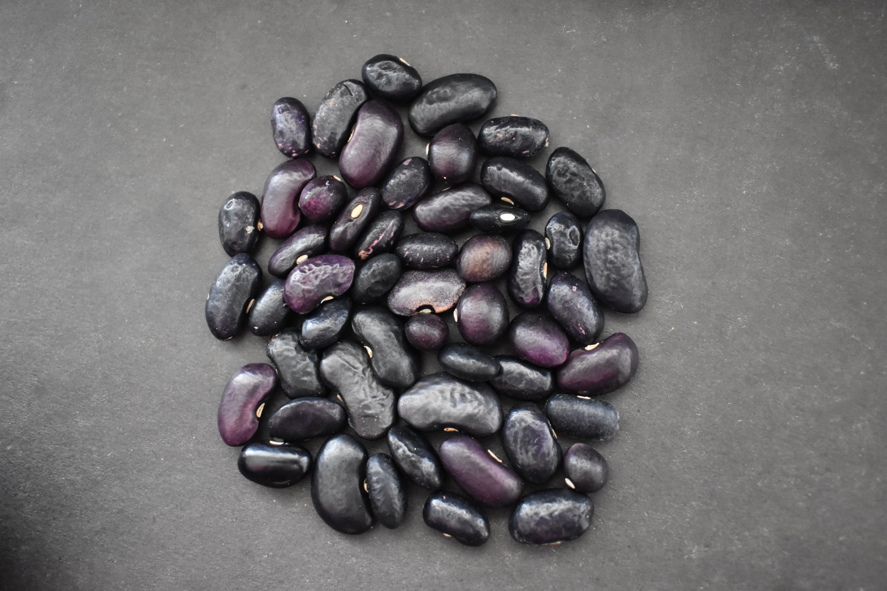

Banco de Germoplasma – INIA
Ficha de caracterización de frijol
Phaseolus vulgaris L.
1. Identificación y procedencia
| Código de accesión | PER1003556 |
| Departamento | AMAZONAS |
| Provincia | CHACHAPOYAS |
| Distrito | SOLOCO |
| Localidad | EL MITO |
2. Ubicación geográfica
| Latitud | -6.251441 |
| Longitud | -77.763378 |
| Altitud | 2625 m s. n. m. |
3. Caracterización morfoagronómica
| Semillas por vaina | 6.6 |
| Peso de 100 semillas | 65.04 g |
| Tipo de crecimiento | No perenne |
4. Fotografía de la semilla
